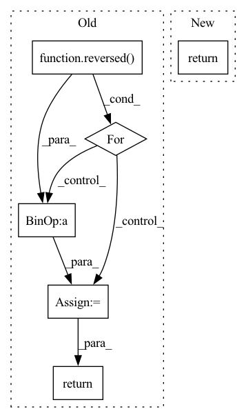

Pattern ID :4167
Before Change
// - eta -> η
// - pred_image_direction -> "direction pointingc to x_t"
// - pred_prev_image -> "x_t-1"
for t in tqdm.tqdm(reversed( range(num_inference_steps)) , total=num_inference_steps):
// 1. predict noise residual
timesteps = torch.tensor([inference_step_times[t]] * image.shape[0], device=torch_device)
pred_noise_t = self.unet(image, timesteps)
if isinstance(pred_noise_t, dict):
pred_noise_t = pred_noise_t["sample"]
// 2. predict previous mean of image x_t-1
pred_prev_image = self.noise_scheduler.step(pred_noise_t, image, t, num_inference_steps, eta)
// 3. optionally sample variance
variance = 0
if eta > 0:
noise = torch.randn(image.shape, generator=generator).to(image.device)
variance = self.noise_scheduler.get_variance(t, num_inference_steps).sqrt() * eta * noise
// 4. set current image to prev_image: x_t -> x_t-1
image = pred_prev_image + variance
// decode image with vae
image = self.vqvae.decode(image)
return image
After Change
// decode image with vae
image = self.vqvae.decode(image)
return {"sample": image}
In pattern: SUPERPATTERN
Frequency: 3
Non-data size: 6
Instances Fragment ID: 15346010
Project Name: huggingface/diffusers
Commit Name: f448360bd0dfe5e28ee65ab2130532db91d5eafe
Time: 2022-07-15
Author: patrick.v.platen@gmail.com
File Name: src/diffusers/pipelines/latent_diffusion_uncond/pipeline_latent_diffusion_uncond.py
M Class Name: LatentDiffusionUncondPipeline
N Class Name: LatentDiffusionUncondPipeline
M Method Name: __call__(6)
N Method Name: __call__(6)
M Parent Class: DiffusionPipeline
N Parent Class: DiffusionPipeline
M File Name: src/diffusers/pipelines/latent_diffusion_uncond/pipeline_latent_diffusion_uncond.py
N File Name: src/diffusers/pipelines/latent_diffusion_uncond/pipeline_latent_diffusion_uncond.py
M Start Line: 31
M End Line: 71
N Start Line: 31
N End Line: 50
Before Change
// - eta -> η
// - pred_image_direction -> "direction pointingc to x_t"
// - pred_prev_image -> "x_t-1"
for t in tqdm.tqdm(reversed( range(num_inference_steps)) , total=num_inference_steps):
// 1. predict noise residual
with torch.no_grad():
residual = self.unet(image, inference_step_times[t])
if isinstance(residual, dict):
residual = residual["sample"]
// 2. predict previous mean of image x_t-1
pred_prev_image = self.noise_scheduler.step(residual, image, t, num_inference_steps, eta)
// 3. optionally sample variance
variance = 0
if eta > 0:
noise = torch.randn(image.shape, generator=generator).to(image.device)
variance = self.noise_scheduler.get_variance(t, num_inference_steps).sqrt() * eta * noise
// 4. set current image to prev_image: x_t -> x_t-1
image = pred_prev_image + variance
return image
After Change
// do x_t -> x_t-1
image = self.scheduler.step(residual, t, image, eta)["prev_sample"]
return {"sample": image}
Fragment ID: 15345992
Project Name: huggingface/diffusers
Commit Name: f448360bd0dfe5e28ee65ab2130532db91d5eafe
Time: 2022-07-15
Author: patrick.v.platen@gmail.com
File Name: src/diffusers/pipelines/ddim/pipeline_ddim.py
M Class Name: DDIMPipeline
N Class Name: DDIMPipeline
M Method Name: __call__(6)
N Method Name: __call__(6)
M Parent Class: DiffusionPipeline
N Parent Class: DiffusionPipeline
M File Name: src/diffusers/pipelines/ddim/pipeline_ddim.py
N File Name: src/diffusers/pipelines/ddim/pipeline_ddim.py
M Start Line: 35
M End Line: 77
N Start Line: 42
N End Line: 59
Before Change
x = enc_layer(x)
intermediate.append(x)
x_rnn, h = self.rnn(x, h)
for dec_layer, x_enc in zip(self.dec, reversed( intermediate) ):
x = dec_layer(x + x_enc)
return x, x_rnn, h
class ComplexCompression(nn.Module):After Change
// x_rnn, h = self.rnn(x, h)
x_inner, intermediate, h = self.encode(x, h)
x = self.decode(x_inner, intermediate)
return x, x_inner, h
class ComplexCompression(nn.Module): Fragment ID: 15346002
Project Name: rikorose/deepfilternet
Commit Name: 29ca309dcc54dd9da42b84a8c2a658b009f143a1
Time: 2022-04-12
Author: h.schroeter@pm.me
File Name: DeepFilterNet/df/multistagenet.py
M Class Name: FreqStage
N Class Name: FreqStage
M Method Name: forward(3)
N Method Name: forward(3)
M Parent Class: nn.Module
N Parent Class: nn.Module
M File Name: DeepFilterNet/df/multistagenet.py
N File Name: DeepFilterNet/df/multistagenet.py
M Start Line: 396
M End Line: 405
N Start Line: 316
N End Line: 321